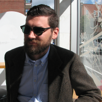

Members
Jillian Bellovary
Assistant Professor, Queensborough Community College
Jillian has a PhD in Astronomy from the University of Washington, and is currently an assistant professor at Queensborough Community College. Jillian studies the formation and evolution of massive black holes using cosmological hydrodynamic simulations. She is interested in how they form in the early universe, how they grow to become the behemoths we see today, and whether or not we can find them in dwarf galaxies. She is involved in BridgeUp:STEM, and serves on the Committee for the Status of Minorities in Astronomy. Jillian served in the U.S. Peace Corps and lived in The Gambia, West Africa, for two years, where she taught college physics and had many adventures. In her free time she enjoys knitting socks and playing roller derby.
Charlotte Christensen
Assistant Professor of Physics, Grinnell College
Charlotte Christensen's research has focused on the properties of feedback-driven galactic outflows and the connection between star formation and the molecular ISM.
BW Keller
Humboldt Fellow, Universität Heidelberg
 Ben Keller is postdoctoral researcher in the MUSTANG group at Universität Heidelberg's Astronomisches Rechen-Institut. His current research involves numerical modelling of the star formation, feedback, and interstellar medium over cosmological timescales.
Ferah Munshi
Assistant Professor, University of Oklahoma
Ferah is an assistant professor at the University of Oklahoma working on studying the smallest and dimmest galaxies: from classical dwarf galaxies down into the ultrafaint and ultradiffuse regimes. These galaxies are at the lower limits of galaxy formation and can tell us a lot about the nature of dark matter, reionization and star formation. Ferah primarily works with zoom-in simulations like the DC Justice League and the Marvel-ous Dwarfs, but is also working with the Romulus volume and cluster.